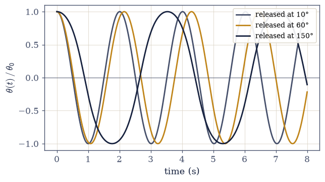
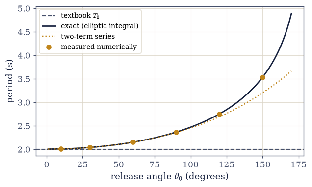
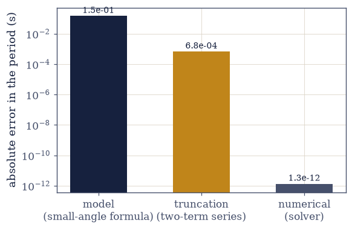
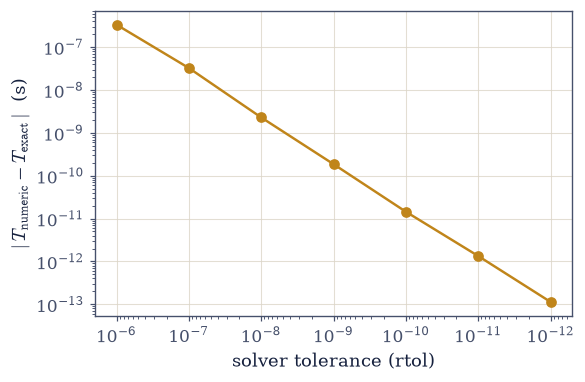

P The Course in Miniature: A Pendulum, Three Ways#
Notebook overview#
This notebook stands outside the numbered course, and it asks a question a child can ask: how long does a pendulum take to swing? We are going to answer it three times, each time more honestly than the last, and in doing so perform, in miniature, everything this course is. If you have done computational work before, you may skip straight to Volume 0 and lose nothing; if you have not, this is the gentlest hour the course contains, and it will make every later page feel familiar.
The banner above appears at the top of every notebook in the series: it names the volume
and the notebook, gives an honest difficulty and time estimate, and is generated by the
shared ecp package so the whole course looks like one work. You can read every page as a
static website, or press the rocket button at the top to launch a live copy (on Binder or
Colab) where the cells actually run and you can change them — this notebook is written for
the live version, but reads fine either way.
The style of work here is deliberate: run, observe, tweak, reflect. You will not write code from scratch. Each exercise asks you to run a cell, watch what it prints or draws, change one named number, and write one sentence about what you saw. (The code itself — the language, the libraries, the shell that carries them — is not this course’s subject. Two sibling courses exist for exactly that: Introduction to the Bash Shell for the terminal, and a Scientific Python companion, currently in development, for the language. Neither is needed to enjoy this page.)
Here is the plan. Route 1 computes the textbook answer. Route 2 brings in the exact answer, and a ladder of discrepancies appears. Route 3 asks the computer directly, walks into a trap, and is rescued by a validation check. At the end, the three routes are laid side by side in an error budget, and a small, precise question is left standing — the question the rest of the course exists to answer.
How to read the checks. Every exercise in this course ends with a small test of its result against something independent. A green ✓ means the two agreed to a stated tolerance; a red ✗ means they did not. Exactly one ✗ below is deliberate — it is the lesson of Exercise 3.
Theory in brief#
The question, and a suspicion#
Every introductory textbook answers our question with a single line: for a pendulum of length \(L\) swinging under gravity \(g\), the period is
Look at that formula for a moment. The amplitude is not in it. It claims that a pendulum nudged to five degrees and one hauled up to a hundred and fifty take exactly the same time to swing back. That should bother you — and taking a formula seriously means testing it, not memorizing it.
The honest equation of motion#
Behind the formula stands Newton’s second law for the swinging bob, with no approximation in it at all:
The textbook result is born when \(\sin\theta\) is replaced by \(\theta\) — an excellent replacement when the angle is small, and an increasingly poor one as it grows. That replacement is the first named approximation of this course: harmless inside its domain, silently wrong outside it, and the difference between those two conditions is what this notebook measures.
What this notebook is#
Three routes to one number. Route 1 evaluates Eq. Eq. 1. Route 2 states the
exact answer — no derivation, only the fact that the full solution of
Eq. Eq. 2 involves a function mathematicians tabulated long ago and
scipy.special.ellipk knows by name. Route 3 integrates Eq. Eq. 2
numerically with scipy.integrate.solve_ivp, used here as a black box and built properly
in §0.7. Any first-year mechanics text derives
Eq. Eq. 1; the pendulum itself returns, damped and driven, in
§1.2; and the question this
notebook ends on is answered where the course begins, in
§0.1.
Setup#
Two constants and four small helpers. Angles are quoted in degrees at the interface and
converted once with numpy.radians — inside the mathematics, everything is radians.
import matplotlib.pyplot as plt
import numpy as np
from scipy.integrate import solve_ivp
from scipy.special import ellipk
from ecp import draw, validate
ACCENT, INK, SOFT = draw.ACCENT, draw.INK, draw.SOFT
L_PEND = 1.0 # pendulum length (m)
G_EARTH = 9.81 # gravitational acceleration (m/s²)
def period_small_angle(L=L_PEND, g=G_EARTH):
"""Textbook small-angle period T0 = 2π√(L/g) (Eq. eq-small-angle).
Parameters
----------
L, g : float
Pendulum length (m) and gravitational acceleration (m/s²).
Returns
-------
float
The amplitude-independent period T0 (s).
"""
return 2.0 * np.pi * np.sqrt(L / g)
def period_exact(theta0, L=L_PEND, g=G_EARTH):
"""Exact free-pendulum period via the complete elliptic integral.
T = (2/π) T0 K(m) with m = sin²(θ0/2). Note that `scipy.special.ellipk`
takes the *parameter* m = k², not the modulus k — the classic silent bug.
Parameters
----------
theta0 : float
Release angle (rad).
L, g : float
Pendulum length (m) and gravitational acceleration (m/s²).
Returns
-------
float
The exact period (s), valid at any amplitude below 180°.
"""
m = np.sin(theta0 / 2.0) ** 2
return (2.0 / np.pi) * period_small_angle(L, g) * ellipk(m)
def period_series(theta0, L=L_PEND, g=G_EARTH):
"""Two-correction series T ≈ T0 (1 + θ0²/16 + 11 θ0⁴/3072).
An approximation that, unlike Eq. eq-small-angle, comes with more terms
on request — so its truncation error can be measured (Exercise 2).
Parameters
----------
theta0 : float
Release angle (rad).
L, g : float
Pendulum length (m) and gravitational acceleration (m/s²).
Returns
-------
float
The series period (s).
"""
return period_small_angle(L, g) * (
1.0 + theta0**2 / 16.0 + 11.0 * theta0**4 / 3072.0
)
def time_to_first_rest(theta0, L=L_PEND, g=G_EARTH, rtol=1e-11):
"""Time at which the released pendulum is first at rest again.
Integrates Eq. eq-pendulum-ode with `scipy.integrate.solve_ivp` and stops
at the first rising zero of the angular velocity (an event with
direction=1). Whether this time *is* the period is exactly the question
Exercise 3 stages.
Parameters
----------
theta0 : float
Release angle (rad); the pendulum starts at rest.
L, g : float
Pendulum length (m) and gravitational acceleration (m/s²).
rtol : float
Relative tolerance handed to the solver (atol follows it).
Returns
-------
float
The first-rest time (s).
"""
def rhs(t, y):
return [y[1], -(g / L) * np.sin(y[0])]
def at_rest(t, y):
return y[1]
at_rest.direction = 1 # catch ω rising through zero, not the release itself
sol = solve_ivp(
rhs, (0.0, 6.0), [theta0, 0.0], events=at_rest, rtol=rtol, atol=rtol * 1e-3
)
return float(sol.t_events[0][0])
def period_numeric(theta0, L=L_PEND, g=G_EARTH, rtol=1e-11):
"""Numerical period of the free pendulum: twice the first-rest time.
The factor of two is the Exercise 3 fix — released at rest, the pendulum
is first at rest again on the *other* side, half a period later.
Parameters
----------
theta0 : float
Release angle (rad).
L, g : float
Pendulum length (m) and gravitational acceleration (m/s²).
rtol : float
Relative tolerance handed to the solver.
Returns
-------
float
The numerical period (s).
"""
return 2.0 * time_to_first_rest(theta0, L, g, rtol)
Exercise 1 — The suspicious formula#
A period with no amplitude in it. We start by simply computing the textbook number, Eq. Eq. 1, and noticing what it does and does not depend on.
Run the cell below, which evaluates \(T_0 = 2\pi\sqrt{L/g}\) at \(L = 1\) m.
Tweak: change
L_runto2.0and re-run. The period grows — by what factor?Reflect (one sentence, in the markdown cell after the check): the formula answers instantly for any length — what does it refuse to ask about?
L_run = 1.0 # metres — change me to 2.0 and re-run (part 2)
T0_run = period_small_angle(L_run)
print(f"T0 = 2π√(L/g) = {T0_run:.9f} s at L = {L_run} m, g = {G_EARTH} m/s²")
T0 = 2π√(L/g) = 2.006066681 s at L = 1.0 m, g = 9.81 m/s²
Validation 1#
✓ the textbook number at L = 1 m [got 2.00607 vs expected 2.00607 (rtol=1e-09)]
True
That green check is this course’s habit: every result gets tested against something independent — here, the value worked out by hand to nine decimals — and you will see one at the end of every exercise from here to the last page.
(Your sentence for part 3 goes here.)
Exercise 2 — The exact answer, and the ladder#
The amplitude was always there. The full solution of Eq. Eq. 2 involves a
function mathematicians tabulated long ago — the complete elliptic integral — and
scipy.special.ellipk knows it by name. That gives us the exact period at any
amplitude, and a way to measure how wrong the textbook formula is.
Run the ladder cell, which evaluates the exact period across release angles from 5° to 150° and prints how far the textbook number falls from each.
Tweak: in the bracketing cell, edit
theta0_deguntil you find the amplitude where the textbook formula is wrong by about 1%.Reflect: was the textbook formula a law, or an approximation — and what would you now want any approximation to come with?
Run the series cell (route 2.5): a two-term correction whose error, measured against exact, you can state — better than a formula that is silently wrong is a formula that tells you how wrong.
print("release angle T/T0 textbook formula is off by")
for deg in (5, 10, 30, 60, 90, 150):
ratio = period_exact(np.radians(deg)) / period_small_angle()
print(f" {deg:>3}° {ratio:.6f} {(ratio - 1) * 100:7.2f} %")
release angle T/T0 textbook formula is off by
5° 1.000476 0.05 %
10° 1.001907 0.19 %
30° 1.017409 1.74 %
60° 1.073182 7.32 %
90° 1.180341 18.03 %
150° 1.762204 76.22 %
theta0_deg = 30.0 # degrees — edit me to bracket the 1% amplitude (part 2)
off = period_exact(np.radians(theta0_deg)) / period_small_angle() - 1.0
print(f"at θ0 = {theta0_deg:.1f}°, the textbook formula is off by {off * 100:.3f} %")
at θ0 = 30.0°, the textbook formula is off by 1.741 %
# Route 2.5 — the series (Eq. eq-small-angle plus two corrections), its truncation
# error MEASURED against the exact answer rather than asserted.
print("release angle series truncation error (s)")
for deg in (10, 30, 60, 90):
th = np.radians(deg)
err = abs(period_series(th) - period_exact(th))
print(f" {deg:>3}° {err:.2e}")
release angle series truncation error (s)
10° 1.33e-08
30° 9.90e-06
60° 6.76e-04
90° 8.68e-03

Fig. 1 The same pendulum released from 10, 60, and 150 degrees, each swing drawn relative to its own starting angle. If the textbook formula were exact the three curves would lie on top of one another; instead the wide swing takes visibly longer, and the amplitude the formula ignores is plainly there in the motion.#

Fig. 2 The period against the release angle: the flat textbook value \(T_0\) (dashed), the exact elliptic-integral result (solid), the two-term series (dotted), and measured numerical periods (points). The exact curve peels away from the flat line slowly at first, then dramatically; the numerical points land on it at every amplitude.#
Validation 2#
✓ the exact period at sixty degrees [got 2.15287 vs expected 2.15287 (rtol=1e-09)]
True
(Your sentences for parts 2 and 3 go here.)
Exercise 3 — Asking the computer directly, and the first catch#
The third route makes no reference to formulas at all: integrate the true equation of
motion, Eq. Eq. 2, and time a swing. The solver
(scipy.integrate.solve_ivp, a tool the course builds properly in
§0.7) is used here as a black box with an event
detector: stop when the angular velocity is zero again — surely that is one full swing?
Run the naive cell below at \(\theta_0 = 60°\) and watch the check under it fail: the measured time is nowhere near the exact period of Exercise 2.
Reflect, then read: the diagnosis is one sentence, and the fix is one line.
Run the rendezvous cell: the corrected route 3 against route 2 at three amplitudes — two utterly different methods meeting at the twelfth decimal.
Tweak: in the tolerance cell, loosen
rtol_runto1e-6and re-run. The agreement degrades to about \(10^{-7}\) — precision is a dial, and now you know where it is.
t_first = time_to_first_rest(np.radians(60.0))
print(f"naive period (first time at rest) = {t_first:.6f} s")
print(f"exact period (Exercise 2) = {period_exact(np.radians(60.0)):.6f} s")
naive period (first time at rest) = 1.076437 s
exact period (Exercise 2) = 2.152875 s
✗ the naive first-rest time is the period [got 1.07644 vs expected 2.15287 (rtol=1e-06)]
False
The check failed — loudly, in red, with both numbers printed. That is what these gates are for: not decoration, but a tripwire. And the diagnosis takes one sentence: released at rest, the pendulum first comes to rest again on the other side — the first velocity-zero event sits at half the period. The measured 1.076 s is \(T/2\); the fix is a factor of two.
T_num = 2.0 * t_first # the fix: one line
print(
f"corrected period = {T_num:.9f} s (exact: {period_exact(np.radians(60.0)):.9f} s)"
)
corrected period = 2.152874667 s (exact: 2.152874667 s)
# The rendezvous: route 3 (numerical) against route 2 (exact) at three amplitudes.
print("release angle numeric − exact (s)")
for deg in (10, 60, 90):
th = np.radians(deg)
gap = period_numeric(th) - period_exact(th)
print(f" {deg:>3}° {gap:+.2e}")
release angle numeric − exact (s)
10° -1.07e-13
60° -1.34e-12
90° -3.75e-12
rtol_run = 1e-11 # solver tolerance — loosen me to 1e-6 and re-run (part 4)
gap = period_numeric(np.radians(60.0), rtol=rtol_run) - period_exact(np.radians(60.0))
print(f"at rtol = {rtol_run:.0e}, numeric − exact = {gap:+.2e} s")
at rtol = 1e-11, numeric − exact = -1.34e-12 s
Validation 3#
✓ two roads, one period [got 2.15287 vs expected 2.15287 (rtol=1e-06)]
True
This check is the course’s central habit with a name: the rendezvous. Compute everything at least twice, by roads as different as possible, and trust nothing that the roads do not agree on. (And notice: a check just like it caught a real bug two cells ago. That is what they are for.)
Exercise 4 — The budget, and the question#
Three errors with three names — and a gap that will not close. We now place everything this notebook produced on one page.
Run the budget cell at \(\theta_0 = 60°\) and read the table: the model error of using the small-angle formula at all, the truncation error of the two-term series, and the numerical error of the solver. Three different errors, spanning eleven orders of magnitude.
Tweak: change
budget_theta_degto10.0and re-run — watch the model error shrink toward the others. The budget is not fixed; it is measured, every time.Run the shrinking-gap cell: the distance between route 3 and route 2 as the solver tolerance tightens — falling, and refusing to reach zero.
Reflect, then read the closing note below.
def budget_table(theta0_deg):
"""Print the three named errors of the pendulum budget at one amplitude.
Parameters
----------
theta0_deg : float
Release angle (degrees).
Returns
-------
tuple of float
(model, truncation, numerical) absolute errors in seconds.
"""
th = np.radians(theta0_deg)
T_ex = period_exact(th)
model = abs(period_small_angle() - T_ex)
trunc = abs(period_series(th) - T_ex)
numer = abs(period_numeric(th) - T_ex)
print(f"error budget at θ0 = {theta0_deg:.0f}° (exact period {T_ex:.9f} s)")
print(
f" model (small-angle formula) {model:.3e} s ({model / T_ex:.1%})"
)
print(f" truncation (two-term series) {trunc:.3e} s")
print(f" numerical (solver at rtol 1e-11) {numer:.3e} s")
return model, trunc, numer
budget_theta_deg = 60.0 # degrees — change me to 10.0 and re-run (part 2)
budget = budget_table(budget_theta_deg)
error budget at θ0 = 60° (exact period 2.152874667 s)
model (small-angle formula) 1.468e-01 s (6.8%)
truncation (two-term series) 6.760e-04 s
numerical (solver at rtol 1e-11) 1.339e-12 s
# The shrinking gap: |numeric − exact| at 60° as the solver tolerance tightens.
rtols = np.array([1e-6, 1e-7, 1e-8, 1e-9, 1e-10, 1e-11, 1e-12])
T_ex60 = period_exact(np.radians(60.0))
gaps = np.array([period_numeric(np.radians(60.0), rtol=rt) - T_ex60 for rt in rtols])
print("solver rtol numeric − exact (s)")
for rt, gp in zip(rtols, gaps):
print(f" {rt:.0e} {gp:+.2e}")
solver rtol numeric − exact (s)
1e-06 -3.35e-07
1e-07 -3.27e-08
1e-08 -2.29e-09
1e-09 -1.86e-10
1e-10 -1.45e-11
1e-11 -1.34e-12
1e-12 -1.14e-13

Fig. 3 The pendulum error budget at a release angle of 60 degrees, on a logarithmic axis: the model error of using the small-angle formula at all, the truncation error of the two-term series, and the numerical error of the solver at rtol \(10^{-11}\). Three different errors, three different names, spanning eleven orders of magnitude.#

Fig. 4 The gap between the numerical and the exact period at 60 degrees as the solver tolerance tightens, on logarithmic axes. The gap falls by roughly three decades for every three decades of tolerance, and it never reaches zero: tolerance is a dial, not a truth.#
Validation 4#
✓ three errors named, one question planted [budget 1.5e-01 > 6.8e-04 > 1.3e-12; gap never zero]
True
The planted question#
Look once more at the last table. Route 2 is a closed formula, exact in principle. Route 3 is a tight integration of the exact equation, also exact in principle. And yet the computer returns them apart — by about \(10^{-7}\) seconds at loose tolerance, \(10^{-10}\) tighter, \(10^{-13}\) tighter still. The gap shrinks, and shrinks, and never reaches zero.
Why can two exact answers not agree exactly?
Because the computer’s arithmetic is itself approximate — every number it holds is a rounding, and every operation rounds again. How approximate, exactly? That is not a detail; it is the floor every computation in this course stands on. It is also precisely where the course begins: §0.1 — Floating-Point Arithmetic and Numerical Error.
Notebook summary#
The suspicious formula Eq. 1: \(T_0 = 2\pi\sqrt{L/g}\), a period with no amplitude in it — an approximation wearing a law’s clothes.
The ladder (Eq. Eq. 2, solved exactly): the textbook number is off by 0.05% at 5°, 1.7% at 30°, 7.3% at 60°, 76% at 150° — excellent in its domain, silently wrong outside it. The two-term series replaces silently wrong with an error you can state.
The trap, caught: the naive event detector reported half the period (1.076 s for 2.153 s); a validation gate caught it in red, the diagnosis took one sentence, and the fix took one line.
The rendezvous: the corrected numerical route met the exact formula at the twelfth decimal — compute everything twice, by roads as different as possible.
The budget: at 60°, model error \(1.5\times10^{-1}\) s, truncation \(6.8\times10^{-4}\) s, numerical \(\sim10^{-12}\) s — never “the error”, always which error, and how large.
The question: two exact answers, a gap that shrinks with tolerance and never reaches zero — handed to §0.1, where the course begins.
Outlook#
§0.1 — Floating-Point Arithmetic and Numerical Error: the planted question’s home, and the very next page.
§0.7 — Solving Ordinary Differential Equations: where the solver used here as a black box is built properly, tolerance dial and all.
§1.2 — The Damped, Driven Pendulum: the pendulum’s future — friction, forcing, resonance, and eventually chaos.
For readers who want shell or language practice first: the sibling Introduction to the Bash Shell, and the Scientific Python companion now in development.